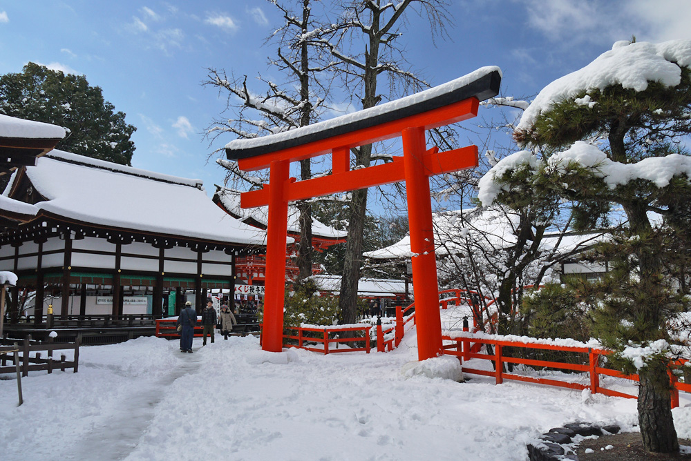

|
The Vietnamese German University
Department of English
Foundation Year
English for Information Technology
PRINCESS SHOKUSHI
(?-1201)
SENZAISHŪ XX: 1272

Composed as a Kamo Shintō poem in a hundred poem sequence. [1]
a) Kanji:
さりともと
たのむ心は
神さびて
久しくなりぬ
かもの瑞垣 |
b) Romanji:
Saritomo to
tanomu kokoro wa
kamisabite
hisashiku narinu
kamo no mizugaki |
c) English:
Whatever
The heart desires within
The dread
And ancient
Walls of Kamo.
[2] |
|